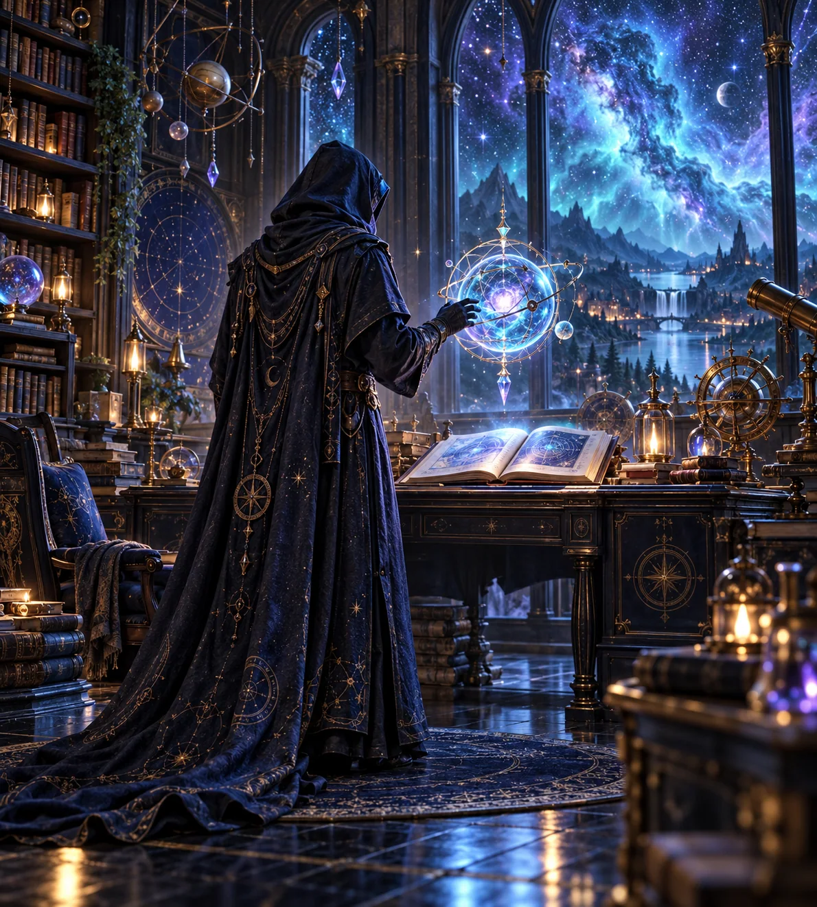
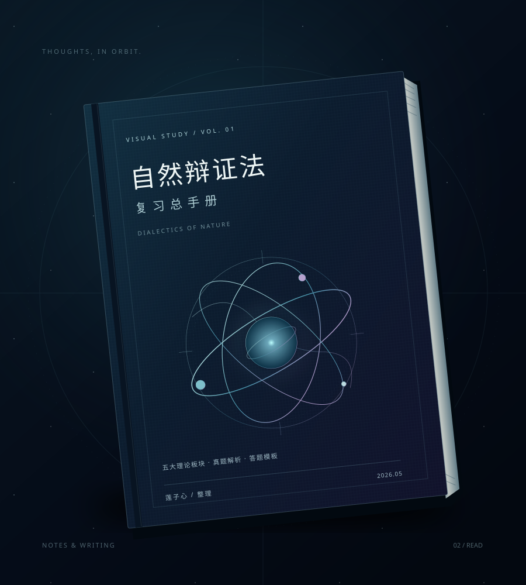
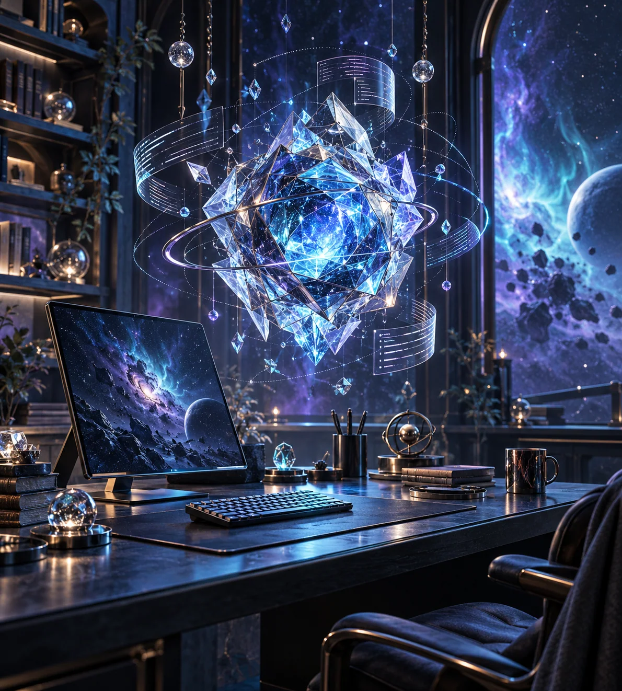
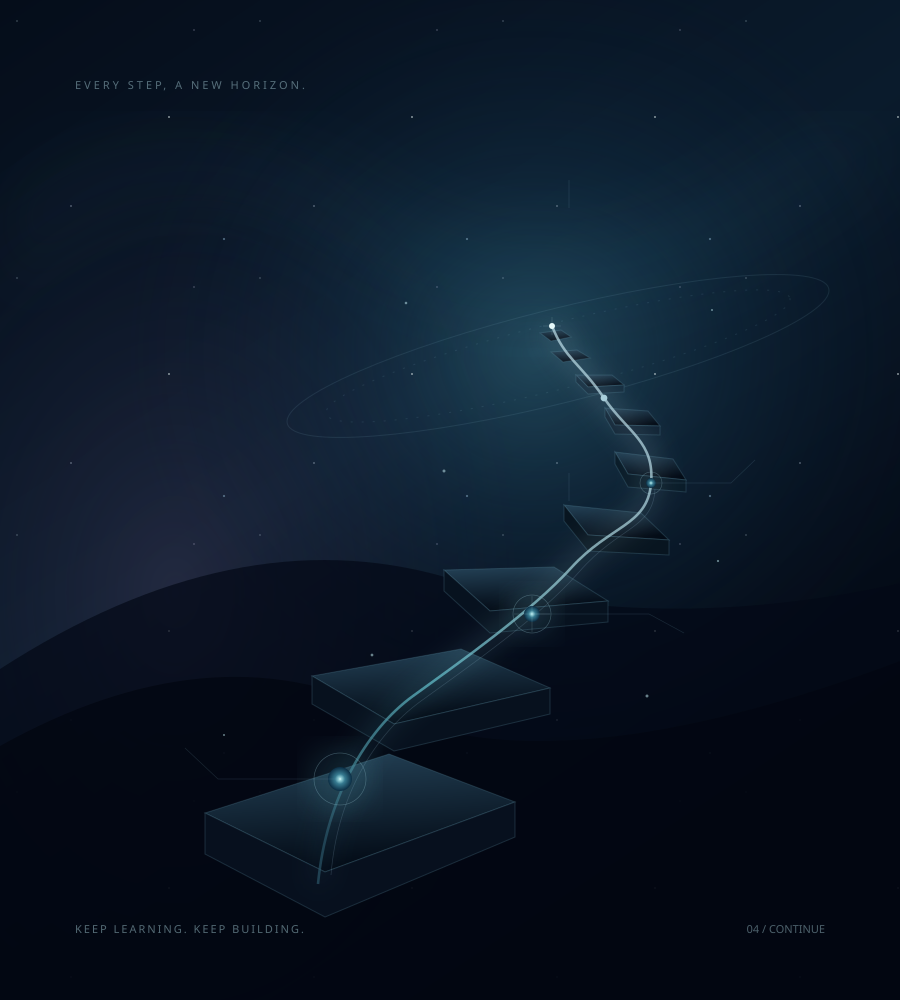

你好，很高兴遇见你
关于我
用代码与文字，
让复杂的事物变得清晰。
我是莲子心，一个热爱技术与知识整理的探索者。从网页开发到 AI 应用，我喜欢动手实践，也喜欢把学习过程认真记录下来。
- 知识整理
- 系统梳理课程，制作可视化复习手册与答题模板。
- 技术探索
- 对编程与新技术保持好奇，在实践中持续学习。
- 笔记写作
- 用 Obsidian 管理个人知识库，为未来积累线索。

A PERSONAL UNIVERSE
在未知中，保持好奇。
轻触球体，开启探索
你好，很高兴遇见你
用代码与文字，
让复杂的事物变得清晰。
我是莲子心，一个热爱技术与知识整理的探索者。从网页开发到 AI 应用，我喜欢动手实践，也喜欢把学习过程认真记录下来。

文字，是另一种探索
关于学习、技术与知识管理的记录。整理过的知识，可以在下一次需要时发光。
五大理论板块的系统梳理，配套真题解析与答题模板，带来更直观的可视化阅读体验。
打开复习手册技术笔记、阅读报告与学习资源。
更多文章待补充。

跟随好奇心的方向
发现、整理、创造。
让想法慢慢生长。
喜欢动手做一些有趣的东西，也在意它们如何被看见。从代码到笔记，从内容到视觉，每一次尝试都是新的连接。
移至编号预览，点击探索更多

01 / 编程与 AI 查看项目仓库 ↗沿途的光，照见下一步
用代码与文字记录成长。这里收藏已经走过的路，也为未来留下空间。
移至时间点，查看沿途记录
用代码和文字记录成长，相信每一步积累都有意义。
新的经历，留给未来。